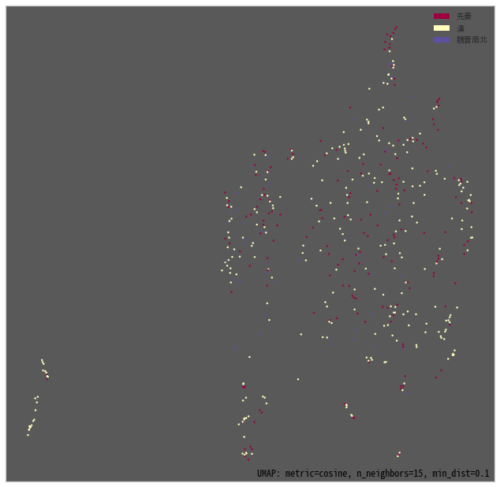
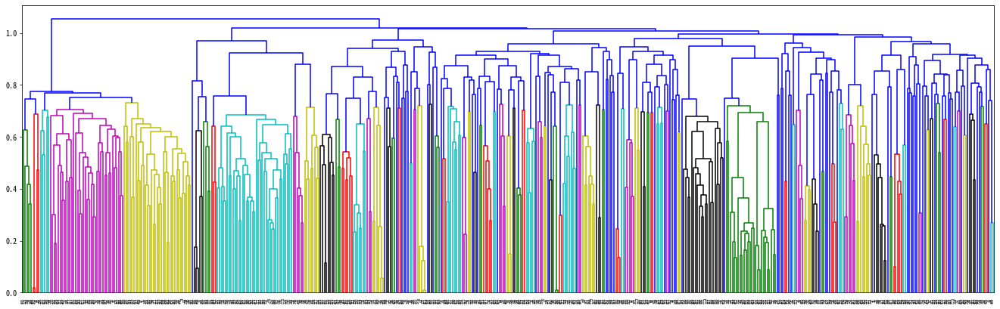
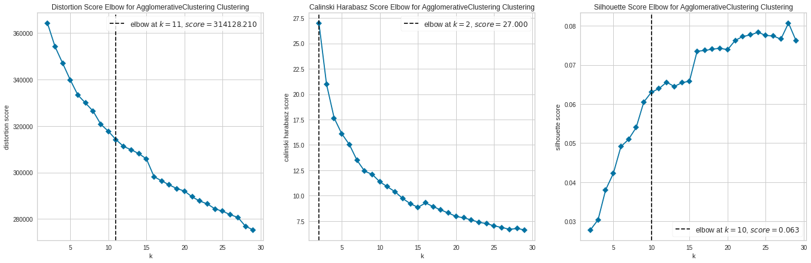
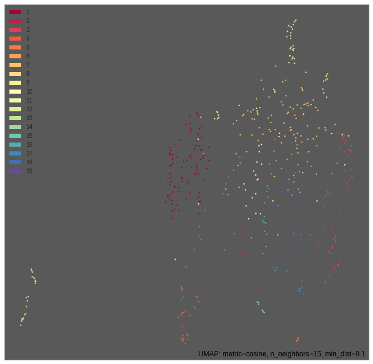
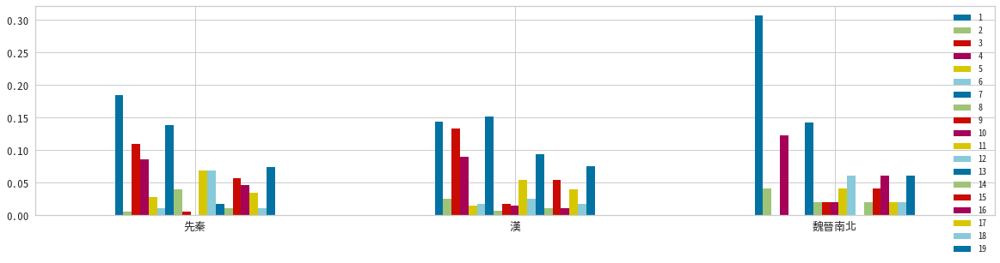
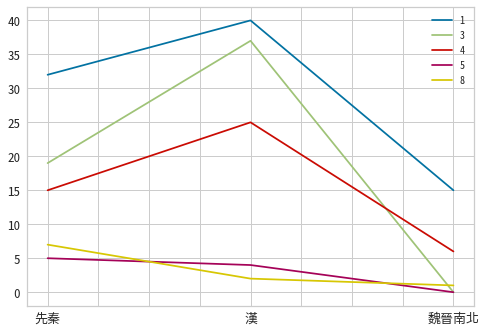

1. Quick Start
from dcctk.corpusReader import PlainTextReader
from dcctk.concordancer import Concordancer
from dcctk.corpus import TextBasedCorpus
c = Concordancer(PlainTextReader("data").corpus)
1 Concordance Search
cql = '''
"君" "子" [ char!="[，。、《》「」『』！？：；]" ]
'''.strip()
results = list(c.cql_search(cql, left=10, right=10))
print('Num of results:', len(results))
for r in results[:5]: print(r)
Num of results: 3570
<Concord 雨，不及地尺而復。」{君子者}、孔子。孔子修之曰：>
<Concord 位，而反乎屠羊之肆。{君子聞}之曰：「甚矣哉！屠羊>
<Concord 或遇以死，或遇以生，{君子避}之，是亦傷人，故吏者>
<Concord 五伯有暴亂之謀。是故{君子不}責備于一人，方正而不>
<Concord 禽何？學者，所以求為{君子也}。求而不得者有矣，夫>
1.1 Concord Object
results[0].get_kwic()
('雨，不及地尺而復。」君子者、孔子。孔子修之曰：', (10, 12))
results[0].get_timestep()
1
results[0].get_timestep(lambda x: x['time_range'])
[-205, 220]
results[0].data
{'captureGroups': {},
'keyword': '君子者',
'left': '雨，不及地尺而復。」',
'meta': {'id': '02/論衡_說日.txt',
'text': {'author': 'Wang Chong', 'book': '論衡', 'sec': '說日'},
'time': {'label': '漢', 'ord': 2, 'time_range': [-205, 220]}},
'position': (1, 160, 27, 132),
'right': '、孔子。孔子修之曰：'}
2 Semantic Similarity with AnchiBert
from random import sample, seed
from dcctk.embeddings import AnchiBert
from dcctk.concordSimil import ConcordSimil
# Jupyter settings for interactive visualizations
from bokeh.io import output_notebook
from bokeh.resources import INLINE
output_notebook(resources=INLINE)
# Initialize bert model
emb = AnchiBert()
# Sample 500 concordance lines of "君子"
seed(100)
results_samp = sample(results, 500)
cs = ConcordSimil(concord_lines=results_samp, bert_model=emb)
Downloading AnchiBert model ...
Downloading...
From: https://drive.google.com/uc?id=1uMlNJzilEhSigIcfjTjPdYOZL9IQfHNK
To: /content/AnchiBERT.zip
100%|██████████| 382M/382M [00:02<00:00, 140MB/s]
Loading AnchiBERT model from AnchiBERT/ ...
Some weights of the model checkpoint at AnchiBERT/ were not used when initializing BertModel: ['cls.predictions.transform.dense.bias', 'cls.predictions.transform.LayerNorm.weight', 'cls.predictions.transform.LayerNorm.bias', 'cls.predictions.bias', 'cls.predictions.transform.dense.weight', 'cls.predictions.decoder.weight']
- This IS expected if you are initializing BertModel from the checkpoint of a model trained on another task or with another architecture (e.g. initializing a BertForSequenceClassification model from a BertForPreTraining model).
- This IS NOT expected if you are initializing BertModel from the checkpoint of a model that you expect to be exactly identical (initializing a BertForSequenceClassification model from a BertForSequenceClassification model).
Computing bert embeddings...
{"version_major":2,"version_minor":0,"model_id":"83b6032703db4ab4a3a6c28447de3298"}
2.1 Sorting Concordance Lines based on Bert similarity
compare_base = results_samp[20].get_kwic()
print(compare_base)
cs.semantic_sort(*compare_base, is_traditional=True)[:10]
('絕之？懷惡而討不義，君子不予也。楚公子棄疾帥師', (10, 12))
{"version_major":2,"version_minor":0,"model_id":"22e4f7a760ea450fa501abf58d514ad0"}
[(<Concord 絕之？懷惡而討不義，{君子不}予也。楚公子棄疾帥師>, 1.0000000249452985),
(<Concord 直而俓，儉而好𠋤者，{君子不}與也。夸而無恥，彊而>, 0.9443227685052723),
(<Concord ，拂乎正，沈而樂者，{君子不}聽也。」或問：「侍君>, 0.942362932104167),
(<Concord 庸行翳路，沖沖而活，{君子不}貴也。」楚兩龔之絜，>, 0.9412178065511391),
(<Concord ，『其身親為不善者，{君子不}入也』。今佛肸親以中>, 0.9233915517589399),
(<Concord 皆在於凶德，雖得之，{君子不}貴也。君子則不然，言>, 0.9127920194460578),
(<Concord 。不合乎先王之法者，{君子不}法也。」觀書者譬諸觀>, 0.9127349625150739),
(<Concord 巧。邪生於多慾。是以{君子不}尚也。禮。與其奢也寧>, 0.9035240450850379),
(<Concord 中道別去。爵級不進，{君子不}興。既濟：六雁俱飛，>, 0.8991585156332778),
(<Concord 百姓也。故無功之師，{君子不}行；無用之地，聖王不>, 0.8982093864739673)]
2.2 Visualizing Bert embeddings
cs.plot_embeddings(labels="m.time.label", interactive=False, background='0.35')

2.3 Hierarchical Clustering of Instances
2.3.1 Exploring Optimal Number of Clusters
cs.hierarchical_clustering_explore(method='average', metric='cosine', standardize_features=True)


2.3.2 Hierarchical Clustering with average linkage and cosine distance
# cs.hierarchical_clustering(threshold=.8, criterion='distance', visualize=False)
df = cs.hierarchical_clustering(threshold=19, criterion='maxclust', visualize=False)
df
left keyword right ... emb_id m.text.author cluster
0 能為表者，未之聞也。 君子時 則進，得之以義，何幸 ... 0 NaN 7
1 行也。山下有雷，頤； 君子以 慎言語，節飲食。觀我 ... 1 NaN 12
2 冬至絕事。冬至前後， 君子安 身靜體，百官絕事，不 ... 2 NaN 19
3 德潤身，心廣體胖，故 君子必 誠其意。《詩》云：「 ... 3 NaN 8
4 鑿也，不其然乎？是以 君子之 為論也，必原事類之宜 ... 4 Xu Gan 1
.. ... ... ... ... ... ... ...
495 從外來，驕其妻妾。由 君子觀 之，則人之所以求富貴 ... 495 NaN 13
496 者靈以化。於戲允哉！ 君子辟 神也，觀彼威儀，遊燕 ... 496 Liu Xiang 11
497 婦；君之父母、従母； 君子子 為庶母慈己者。緦麻， ... 497 NaN 11
498 子論其材曰：『有土之 君子也 ，有眾使也，有刑用也 ... 498 NaN 4
499 詩》云：「窈窕淑女， 君子好 逑。」言賢女能為君子 ... 499 Liu Xiang 19
[500 rows x 13 columns]
cs.plot_cluster_results(interactive=False, background='0.35')

df_sub = df[df.cluster == 9]
print('num of results:', df_sub.shape[0])
df_sub
num of results: 7
left keyword right ... emb_id m.text.author cluster
122 死夫。裴回兩渠間兮， 君子獨 安居！」坐者皆泣。有 ... 122 NaN 9
136 ，人道福正而禍邪。故 君子內 正而外馴，每以下人。 ... 136 Yang Xiong 9
264 有喜色。門人曰：「聞 君子禍 至不懼，福至不喜。」 ... 264 Sima Qian 9
371 田，利見大人。九三： 君子終 日乾乾，夕惕若，厲， ... 371 NaN 9
391 安，是以嬰得順也。聞 君子獨 立不慚於影。今孔子伐 ... 391 NaN 9
423 水而生，失水而死，故 君子常 懼而不敢失道。豪傑秉 ... 423 NaN 9
458 甘糟糠而安藜藿。「夫 君子非 不欲仕也。恥夸毗以求 ... 458 NaN 9
[7 rows x 13 columns]
3 Sense Analysis
from dcctk.senseAnalysis import SenseAnalysis
dsa = SenseAnalysis(cs)
3.1 Sense distribution across time
dsa.sense_distribution_raw
1 2 3 4 5 6 7 8 9 10 11 12 13 14 15 16 17 18 19
0 32 1 19 15 5 2 24 7 1 0 12 12 3 2 10 8 6 2 13
1 40 7 37 25 4 5 42 2 5 4 15 7 26 3 15 3 11 5 21
2 15 2 0 6 0 0 7 1 1 1 2 3 0 1 2 3 1 1 3
dsa.sense_distribution
1 2 3 ... 17 18 19
0 0.183908 0.005747 0.109195 ... 0.034483 0.011494 0.074713
1 0.144404 0.025271 0.133574 ... 0.039711 0.018051 0.075812
2 0.306122 0.040816 0.000000 ... 0.020408 0.020408 0.061224
[3 rows x 19 columns]
dsa.plot_sense_distribution(timelabel='m.time.label', fontsize=13, figsize=(20,4.5))

dsa.plot_sense_timeseries(clusters=[1, 3, 4, 5, 8], timelabel='m.time.label', raw_count=True, fontsize=13)

4 Dispersion
import pprint
from dcctk.dispersion import Dispersion
from dcctk.corpusReader import PlainTextReader
dp = Dispersion(PlainTextReader("data").corpus)
Indexing corpus for text retrival...
{"version_major":2,"version_minor":0,"model_id":"7b46c4b28eda467fa3d33803b02e8c00"}
Indexing corpus for concordance search...
{"version_major":2,"version_minor":0,"model_id":"258cae6db71241cb80a302abec91041b"}
4.1 Dispersion measures of a character
Corpus parts are separated text files.
# Compute on the full corpus
dp.char_dispersion(char='之')
{'DP': 0.2022111504415149,
'DPnorm': 0.20221136832606973,
'JuillandD': 0.9852650352870054,
'KLdivergence': 0.19438300669532335,
'RosengrenS': 0.9263291584455613,
'range': 1844}
# Compute separate dispersion measures for each subcorpus (time-sliced)
for i in range(dp.num_of_subcorp):
stats, data = dp.char_dispersion(char='之', subcorp_idx=i, return_raw=True)
print(f"Time: {i}")
print(f"Occured {data['f']} times in {data['n']} texts\n")
pprint.pprint(stats)
print('\n')
Time: 0
Occured 64665 times in 732 texts
{'DP': 0.12850786502690828,
'DPnorm': 0.12850904069194602,
'JuillandD': 0.9773162825598201,
'KLdivergence': 0.09589034120820826,
'RosengrenS': 0.9614052434775078,
'range': 666}
Time: 1
Occured 100411 times in 1049 texts
{'DP': 0.177157904011686,
'DPnorm': 0.17715848879560456,
'JuillandD': 0.9793139748213145,
'KLdivergence': 0.14783747591652752,
'RosengrenS': 0.9465804731333193,
'range': 1021}
Time: 2
Occured 44167 times in 156 texts
{'DP': 0.13409883701225642,
'DPnorm': 0.13411539941898626,
'JuillandD': 0.9639771653228966,
'KLdivergence': 0.0886095001420331,
'RosengrenS': 0.9702834801523642,
'range': 156}
Time: 3
Occured 1365 times in 1 texts
{'DP': 0.0,
'DPnorm': 0,
'JuillandD': None,
'KLdivergence': 0.0,
'RosengrenS': 1.0000000000000002,
'range': 1}
Time: 4
Occured 0 times in 5 texts
{'DP': 0,
'DPnorm': 0,
'JuillandD': None,
'KLdivergence': 0,
'RosengrenS': None,
'range': 0}
4.2 Dispersion measures of a complex form
4.2.1 CQL Search Result
import pandas as pd
from dcctk.concordancer import Concordancer
c = Concordancer(PlainTextReader("data").corpus)
cql = """
"王" "者"
""".strip()
results = list(c.cql_search(cql, left=10, right=10))
print('Num of results:', len(results))
for r in results[:5]: print(r)
Indexing corpus for text retrival...
{"version_major":2,"version_minor":0,"model_id":"33495329c94247f48c9703ca8dad391a"}
Indexing corpus for concordance search...
{"version_major":2,"version_minor":0,"model_id":"991eb7a639ce4663b9eafdc092e29fca"}
Num of results: 1152
<Concord 寧，明王之憂也。』故{王者}之於天下，猶一室之中>
<Concord 固辭曰：「昔陳嬰不受{王者}，以有老母也。今統內>
<Concord ，臣等誠竊惶懼。臣聞{王者}動設先置，止則交戟，>
<Concord 也。非王者則曷為謂之{王者}？王者無求，曰：是子>
<Concord 此一時也。五百年必有{王者}興，其間必有名世者。>
# Compute separate dispersion measures for each subcorpus (time-sliced)
df = []
for i in range(dp.num_of_subcorp):
stats, data = dp.pattern_dispersion(data=results, subcorp_idx=i, return_raw=True)
stats['time'] = i
stats['freq'] = data['f']
stats['range (%)'] = stats['range'] / data['n']
stats['num_of_texts'] = data['n']
stats['corpus_size'] = data['corpus_size']
df.append(stats)
pd.DataFrame(df)
range DP DPnorm ... range (%) num_of_texts corpus_size
0 117 0.730767 0.730774 ... 0.159836 732 1858228
1 206 0.510130 0.510132 ... 0.196378 1049 3938310
2 40 0.328366 0.328406 ... 0.256410 156 2097273
3 0 0.000000 0.000000 ... 0.000000 1 458738
4 0 0.000000 0.000000 ... 0.000000 5 50
[5 rows x 11 columns]
4.2.2 Sense Cluster
d = cs.hierarchical_clustering(threshold=19, criterion='maxclust', visualize=False)
d = d[d.cluster == 8]
d
left keyword right ... emb_id m.text.author cluster
3 德潤身，心廣體胖，故 君子必 誠其意。《詩》云：「 ... 3 NaN 8
6 也；見敬愛者，人也。 君子必 在己者，不必在人者也 ... 6 Lu Bu-wei 8
95 其所貴。」此之謂也。 君子必 辯。凡人莫不好言其所 ... 95 NaN 8
173 ，知之，正之至也。故 君子必 存乎三至，弗至，斯有 ... 173 NaN 8
248 兆，而成之者無幾。故 君子必 立其志。《易》曰：「 ... 248 Xu Gan 8
268 必友，為人弟必悌。故 君子莫 若欲為惠君、忠臣、慈 ... 268 NaN 8
365 好色，此之謂自謙，故 君子必 慎其獨也！小人閑居為 ... 365 NaN 8
387 行安之，樂言之；故言 君子必 辯。小辯不如見端，見 ... 387 NaN 8
469 楊柳有路側之勢故也。 君子當 去二輕取四重：言重則 ... 469 NaN 8
488 民衣食之所以足也。故 君子莫 若審兼而務行之，為人 ... 488 NaN 8
[10 rows x 13 columns]
# Compute separate dispersion measures for each subcorpus (time-sliced)
df = []
for i in range(dp.num_of_subcorp):
stats, data = dp.pattern_dispersion(data=d, subcorp_idx=i, return_raw=True)
stats['time'] = c.get_meta(i).get('label', '')
stats['freq'] = data['f']
stats['range (%)'] = stats['range'] / data['n']
stats['num_of_texts'] = data['n']
stats['corpus_size'] = data['corpus_size']
df.append(stats)
pd.DataFrame(df)
range DP DPnorm ... range (%) num_of_texts corpus_size
0 4 0.990412 0.990421 ... 0.005464 732 1858228
1 2 0.998976 0.998980 ... 0.001907 1049 3938310
2 1 0.994173 0.994296 ... 0.006410 156 2097273
3 0 0.000000 0.000000 ... 0.000000 1 458738
4 0 0.000000 0.000000 ... 0.000000 5 50
[5 rows x 11 columns]